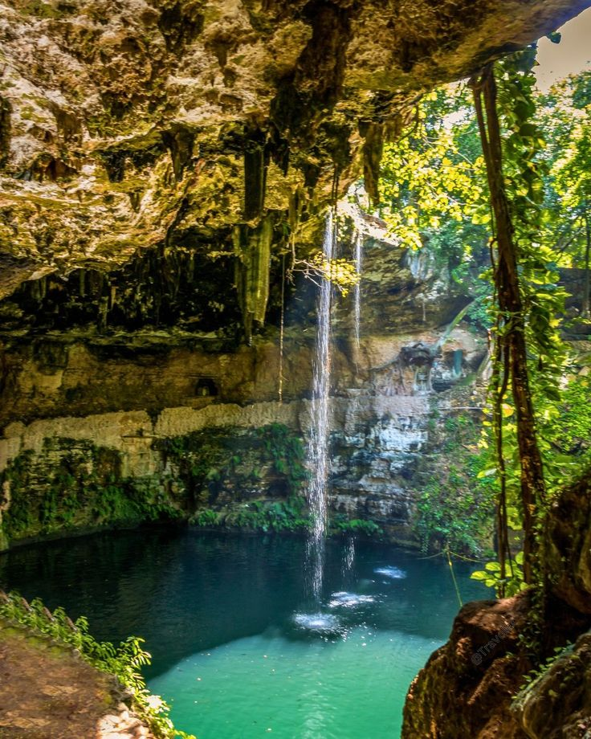
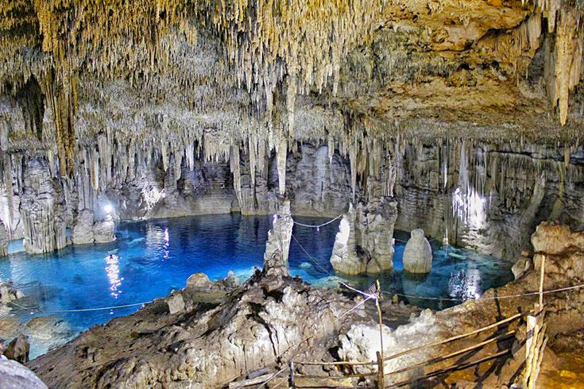
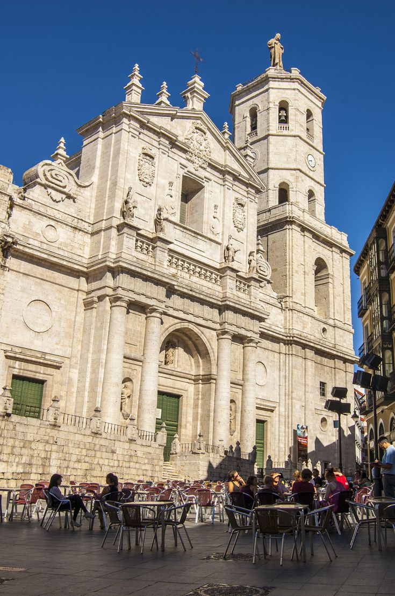
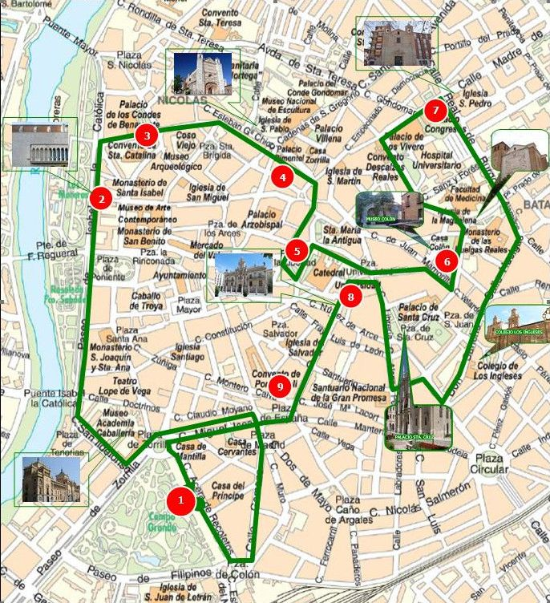
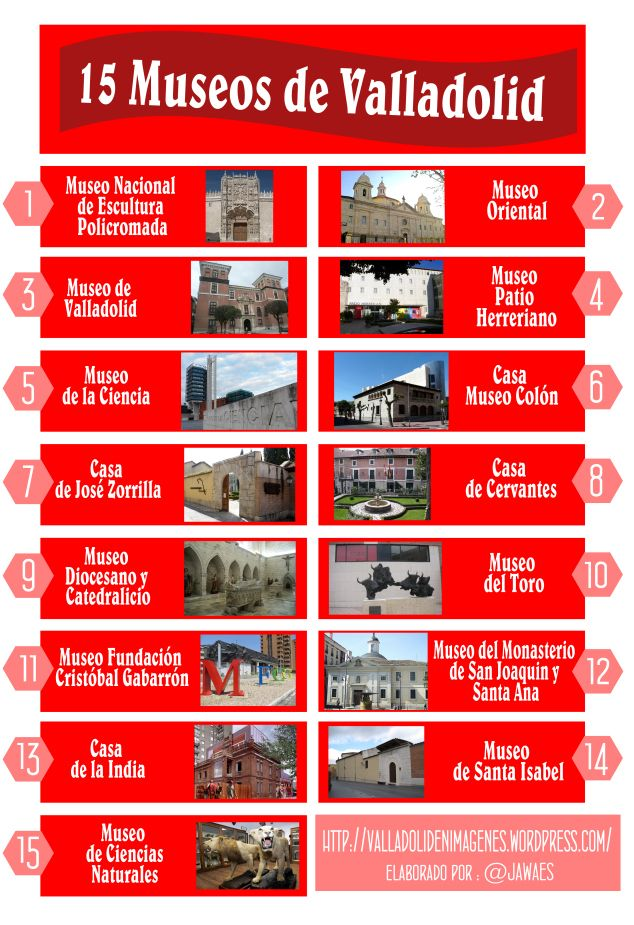
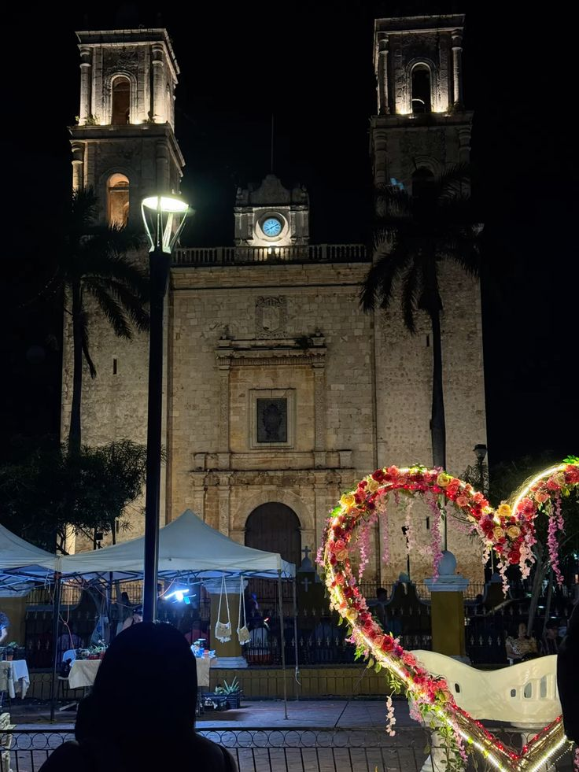
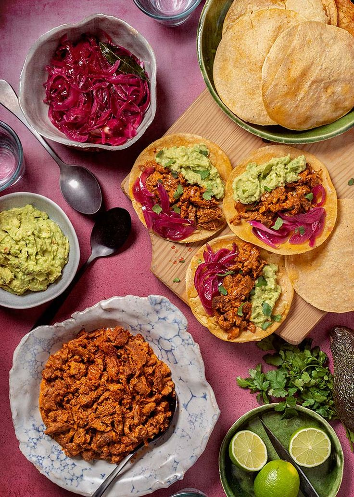
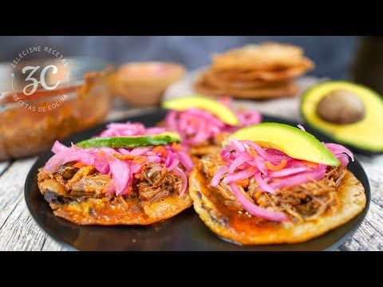
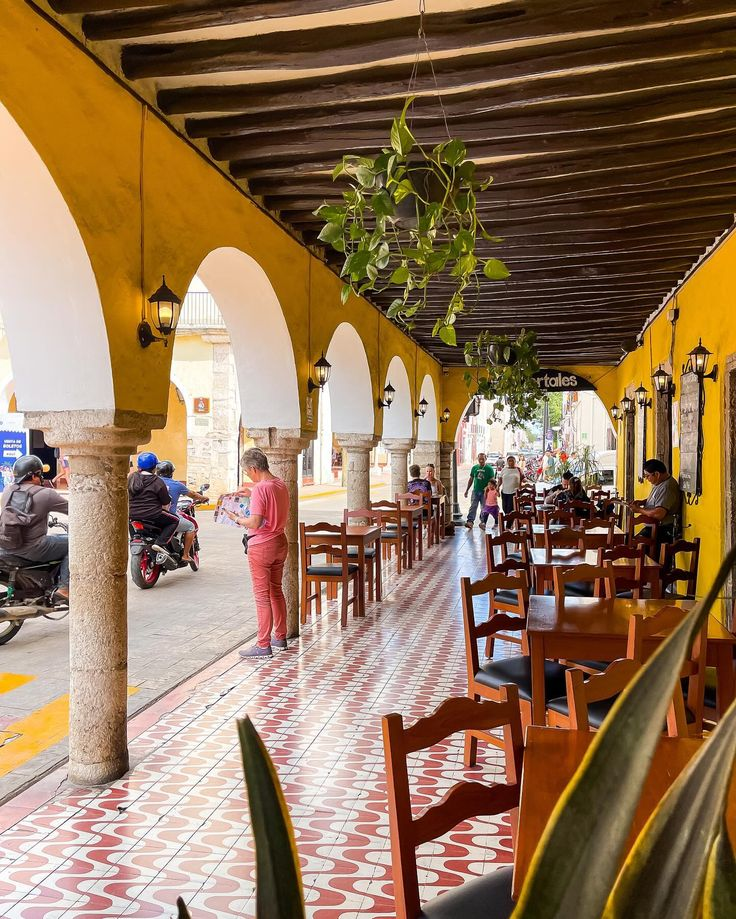

Cenote Zací
Cenote natural ubicado en el centro de la ciudad, ideal para nadar.


Valladolid es un hermoso Pueblo Mágico ubicado en el estado de Yucatán. Se caracteriza por sus calles coloridas, su arquitectura colonial y su gran riqueza cultural.


Valladolid se localiza al oriente de Yucatán, cerca de la zona arqueológica de Chichén Itzá. Es un destino turístico importante por sus tradiciones, cenotes y cultura maya. Su clima es cálido durante todo el año.


Cenote natural ubicado en el centro de la ciudad, ideal para nadar.


Antiguo convento franciscano con gran valor histórico.


Calle colorida llena de historia, tiendas y cultura.

Zona arqueológica cercana, una de las 7 maravillas del mundo moderno.


La gastronomía de Valladolid incluye platillos tradicionales como la cochinita pibil, lomitos de Valladolid, panuchos y salbutes.





Para más información: @valladolidyucatan